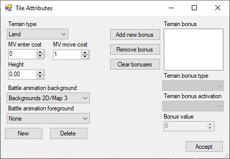

Titles Attributes
Terrain type: The type of the terrain. Air/Land/Sea/Space are the usual terrain that units with corresponding movement type can move to. Wall means you can’t shoot or move through it. Void is like air except you can’t move once inside, the gravity will make you fall until you hit land or die offmap.
MV enter cost: How many MV it cost to enter coming from a different terrain type. Like moving into water from land.
MV move cost: How many MV in cost to move between tiles of the same type.
Battle animation background/foreground: Specify a background or foreground to be used during the battle animations from the dropdown. The New button will let you add new backgrounds to both dropdowns and the Delete will delete the currently selected one.
Terrain Bonus: Add terrain bonus like HP regeneration and when it activate, such as once every turn.